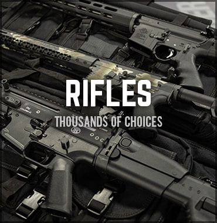

Rifles de Asalto
Los fusiles de asalto son el arma de infantería estándar en la mayoría de los ejércitos modernos y han reemplazado o complementado ampliamente a los más grandes y potentes fusiles de batalla

Los fusiles de asalto son el arma de infantería estándar en la mayoría de los ejércitos modernos y han reemplazado o complementado ampliamente a los más grandes y potentes fusiles de batalla
Las escopetas, en combate, al disparar proyectiles múltiples, es decir, una "nube" de perdigones a la vez con cada disparo, permiten acertar con facilidad a corta distancia, siendo un impacto de lleno demoledor.
arma de fuego corta diseñada para ser apuntada y disparada con una sola mano, o con dos, se puede utilizar para la caza dependiendo del arma12 y dispara balas a corto alcance.